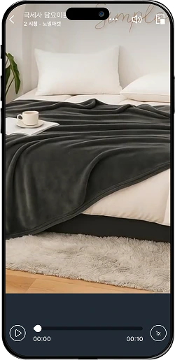
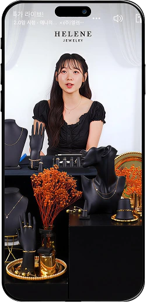

쿠팡 라이브와 함께한
브랜드가 이야기합니다
-
“타사 대비 쿠팡 라이브 매출은
3배 이상 이었습니다.”
-
“1시간의 쿠팡 라이브로 직전
월 매출의 86%를 달성했죠.”
-
“쿠팡 라이브로 제품 발주량이
100% 상승 했어요.”
쿠팡 라이브는
다양한 방송 형태로
표현의 폭을 넓혀갑니다
-

숏츠
짧은 영상, 녹화와 수정 가능
라이브와 다른 편안한 제작 방식고객들은 정보 과잉 속에서 쉽게 피로감을 느낍니다.
이런 상황에서, 짧은 시간 안에 핵심을 전달하는
숏츠는 매우 효과적인 전략이 됩니다.
길게는 1분, 짧게는 3초 동안 핵심 메시지를 담을 수 있어 유용합니다.- 쿠팡 내 다양한 위젯에 노출되어 상품 구매 페이지의 트래픽 증가
- 상세 페이지에 숏츠가 함께 노출되어 상품 이해도와 구매율 증가
- 노출·클릭은 수수료 무료, 매출 발생 시 5%만 과금
-

크리에이터 라이브
쿠팡이 중개하는 전문가와 함께
완성도 높은 라이브쿠팡의 ‘크리에이터 마켓플레이스’에 등록되어 있는
쿠팡 크리에이터와 함께 만드는 방송입니다.
직접 크리에이터를 검색하고 선택할 수 있고,
크리에이터들과 다양한 방법으로 협업할 수 있습니다.- 크리에이터의 라이브 진행으로 신뢰도와 설득력 보장
- 판매자의 방송 출연 부담 최소화
- 판매자의 제안 방송 또는 크리에이터 기획 방송 등
다양한 협업 방식 존재
-

셀프 라이브
모든 걸 내 손으로
비용은 줄이고 운영은 자유롭게판매자가 직접 방송을 기획·진행하거나
자체 크리에이터와 함께하는 셀프 라이브입니다.
비용은 줄이고 운영은 유연하게, 나만의 라이브를 완성할 수 있습니다.- 크리에이터 수수료 없이 저비용으로 운영 가능
- 방송 일정과 콘텐츠를 상황에 맞게 자유롭게 조절 가능